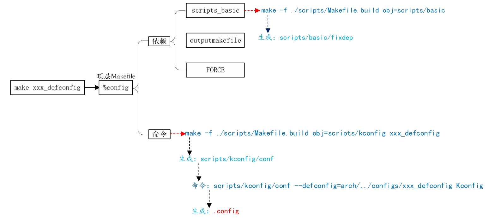
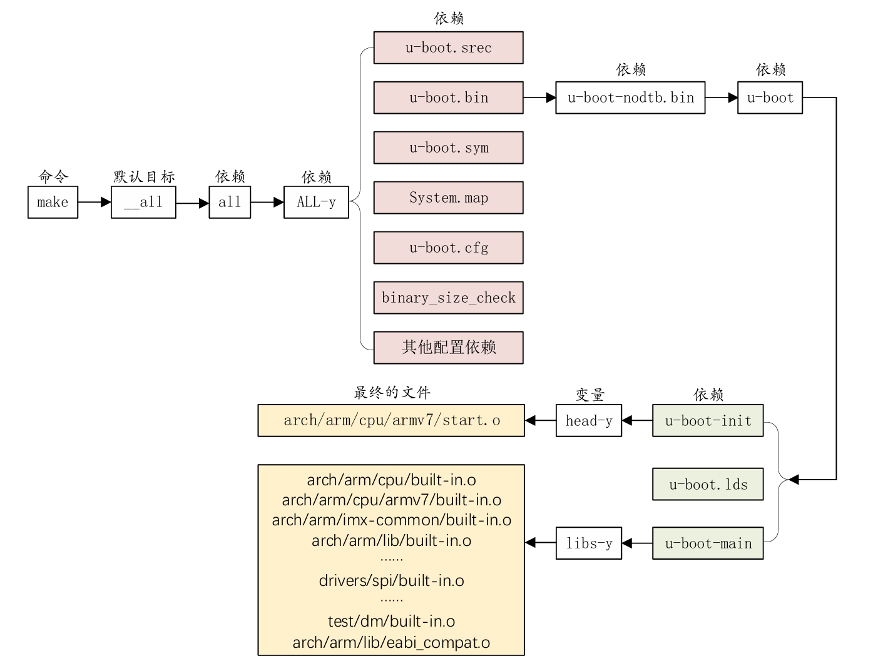

Chapter3 Linux系统移植
移植Linux
在进行 Linux 驱动开发之前肯定需要先将 Linux 系统移植到开发板上去。但和 MCU 上移植 RTOS 不同，Linux 的移植要复杂一些。
在移植 Linux 之前我们需要先移植一个 bootloader 代码，这个 bootloader 代码用于启动 Linux 内核，bootloader有很多，常用的就是 U-Boot。移植好 U-Boot 以后再移植 Linux 内核，移植完 Linux 内核以后 Linux 还不能正常启动，还需要再移植一个根文件系统(rootfs)，根文件系统里面包含了一些最常用的命令和文件。
所以 U-Boot、Linux kernel 和 rootfs 这三者一起构成了一个完整的 Linux 系统，一个可以正常使用、功能完善的 Linux 系统。
1. U-Boot 是什么
1.1 U-Boot 简介
U-Boot（Universal Boot Loader）是嵌入式系统领域中最流行、功能最完善的 BootLoader 软件之一. 作为嵌入式 Linux 系统的"引导者", U-Boot 负责在操作系统运行之前完成关键的硬件初始化和系统引导工作. 其名称"Universal"体现了它的设计目标——支持多种架构、多种平台和多种操作系统
从历史角度看, U-Boot 起源于 2000 年的 PPCBoot 项目, 由德国 DENX 软件工程中心的 Wolfgang Denk 主导开发. 它后来融合了 8xxROM 和 FADSROM 的功能, 逐步发展成为今天支持 ARM、PowerPC、MIPS、x86、RISC-V 等多种处理器架构的"通用"BootLoader. 根据 2023 年嵌入式开源峰会上的数据, U-Boot 项目每年有约 6000 次提交, 拥有约 300 万行 C 代码, 支持超过 21 种 RISC-V 开发板以及大量的 ARM 平台
在嵌入式系统中, U-Boot 的地位相当于 PC 系统中的 BIOS 或 UEFI. 如同 PC 启动时首先运行 BIOS 一样, 嵌入式系统上电后首先执行 U-Boot. U-Boot 负责初始化处理器、设置时钟、配置内存控制器、检测 DRAM, 然后初始化必要的硬件设备如串口、网络、存储设备等, 最后加载操作系统内核并将控制权转交给内核
对于一块开发板而言，通常有3种uboot。1 uboot 官方的 uboot 代码：由 uboot 官方维护开发的 uboot 版本，版本更新快，基本包含所有常用的芯片。2 半导体厂商的 uboot 代码：半导体厂商维护的一个 uboot，专门针对自家的芯片，在对自家芯片支持上要比 uboot 官方的好。 3开发板厂商的 uboot 代码：开发板厂商在半导体厂商提供的 uboot 基础上加入了对自家开发板的支持。
uboot 官方的基本是不会用的，因为支持太弱了。最常用的就是半导体厂商或者开发板厂商的 uboot，如果你用的半导体厂商的评估板，那么就使用半导体厂商的 uboot，如果你是购买的第三方开发板，比如正点原子的 I.MX6ULL 开发板，那么就使用正点原子提供的 uboot 源码（也是在半导体厂商的 uboot 上修改的）。当然了，你也可以在购买了第三方开发板以后使用半导体厂商提供的 uboot，只不过有些外设驱动可能不支持，需要自己移植，这个就是我们常说的 uboot 移植。
1.2 U-Boot 命令
-
环境变量命令
- 查看支持的命令 help / ?
- 打印环境变量 print
- 修改（包括新建与删除）环境变量 setenv
- 保存环境变量 saveenv
-
内存操作命令
- 查看内存地址值 md[.b, .w, .l] address [# of objects]
- 修改内存地址值 nm [.b, .w, .l] address
- 拷贝数据值 cp [.b, .w, .l] source target count
- 比较内存数据是否相等 cmp [.b, .w, .l] addr1 addr2 count
-
网络操作命令
- 查看是否与ip地址建立连接 ping ip_address
- 从路由器获取ip地址 dhcp
- 通过nfs传输 nfs [loadAddress] [[hostIPaddr:]filename]
- 通过tftp传输 tftp [loadAddress] [filename]
-
MMC设备操作命令
- 输出当前选中的mmc设备的信息 mmc info
- 扫描当前开发板上所有的MMC 设备 mmc rescan
- 来查看当前开发板一共有几个MMC设备 mmc list
- 切换当前选中的mmc设备 mmc dev
- 查看mmc设备分区 mmc part
- 写MMC设备 mmc write
- 擦除MMC设备 mmc erase
-
FAT/EXT 格式文件系统操作命令
- 查看MMC设备某个分区的文件系统格式 fstype
- 查询FAT/EXT格式设备的目录和文件信息 fatls ext2ls ext4ls
- 将指定的文件读取到DRAM fatload ext2load ext4load
-
boot操作命令
- 启动zImage镜像文件 bootz
- 启动uImage镜像文件 bootm
- 读取环境变量bootcm来启动(运行bootcm脚本启动) boot
-
其他命令
- 可复位重启 reset
- 跳到指定的地址处执行应用 go addr [arg ...]
- 于运行环境变量中定义的命令(运行自定义脚本) run
2. U-Boot 顶层Makefile
学会 uboot 使用以后就可以尝试移植 uboot 到自己的开发板上了，但是在移植之前需要我们得先分析一遍 uboot 的启动流程源码，得捋一下 uboot 的启动流程，否则移植的时候都不知道该修改那些文件。
2.1 工程目录分析
-
arch文件夹：与架构体系有关的代码
-
board文件夹：不同板子(开发板)的定制代码
-
configs文件夹：配置文件
uboot 是可配置的，但是你要是自己从头开始一个一个项目的配置，那就太麻烦了，因此一般半导体或者开发板厂商都会制作好一个配置文件。我们可以在这个做好的配置文件基础上来添加自己想要的功能，这些半导体厂商或者开发板厂商制作好的配置文件统一命名为“xxx_defconfig”，xxx 表示开发板名字，这些 defconfig 文件都存放在 configs 文件夹
-
.u-boot.xxx_cmd 文件
.u-boot.xxx_cmd 是一系列的文件，这些文件都是编译生成的，都是一些命令文件
-
makefile 文件
这个是顶层 Makefile 文件，Makefile 是支持嵌套的，也就是顶层 Makefile 可以调用子目录中的 Makefile 文件。Makefile 嵌套在大项目中很常见，一般大项目里面所有的源代码都不会放到同一个目录中，各个功能模块的源代码都是分开的，各自存放在各自的目录中。每个功能模块目录下都有一个 Makefile，这个 Makefile 只处理本模块的编译链接工作，这样所有的编译链接工作就不用全部放到一个 Makefile 中，可以使得 Makefile 变得简洁明了。
-
u-boot.xxx 文件
u-boot：编译出来的 ELF 格式的 uboot 镜像文件。 u-boot.bin：编译出来的二进制格式的 uboot 可执行镜像文件。 u-boot.cfg：uboot 的另外一种配置文件。 u-boot.imx：u-boot.bin 添加头部信息以后的文件，NXP 的 CPU 专用文件。 u-boot.lds：链接脚本。 u-boot.map：uboot 映射文件，通过查看此文件可以知道某个函数被链接到了哪个地址上。 u-boot.srec：S-Record 格式的镜像文件。 u-boot.sym：uboot 符号文件。 u-boot-nodtb.bin：和 u-boot.bin 一样，u-boot.bin 就是 u-boot-nodtb.bin 的复制文件。
2.2 顶层Makefile分析
-
版本号
-
MAKEFLAGS 变量
make 是支持递归调用的，也就是在 Makefile 中使用
make命令来执行其他的 Makefile文件，一般都是子目录中的 Makefile 文件。假如在当前目录下存在一个“subdir”子目录，这个子目录中又有其对应的 Makefile 文件，那么这个工程在编译的时候其主目录中的 Makefile 就可以调用子目录中的 Makefile，以此来完成所有子目录的编译。 -
命令输出控制
默认情况下，U-Boot 编译时不会在终端中显示完整的命令，而是显示简短的命令。这可以通过设置变量 V=1 来实现完整的命令输出，这在调试 U-Boot 时非常有用。
-
静默输出
在某些情况下，我们可能希望编译过程完全静默，不输出任何命令。这可以通过使用
make -s来实现。 -
设置编译输出目录
uboot 可以将编译出来的目标文件输出到单独的目录中，在 make 的时候使用“O”来指定输出目录，比如
make O=out就是设置目标文件输出到 out 目录中。这么做是为了将源文件和编译产生的文件分开，当然也可以不指定 O 参数，不指定的话源文件和编译产生的文件都在同一个目录内，一般我们不指定 O 参数。 -
代码检查
uboot 支持代码检查，使用命令
make C=1使能代码检查，检查那些需要重新编译的文件。make C=2用于检查所有的源码文件 -
模块编译
在 uboot 中允许单独编译某个模块，使用命令
make M=dir即可 -
设置目标架构、交叉编译器和配置文件
编译uboot的时候需要设置目标板架构和交叉编译器，
make ARCH=armCROSS_COMPILE=arm-linux-gnueabihf-就是用于设置 ARCH 和 CROSS_COMPILE。每次编译 uboot 的时候都要在 make 命令后面设置ARCH 和 CROSS_COMPILE，使用起来很麻烦，可以直接修改顶层 Makefile，在里面加入 ARCH 和 CROSS_COMPILE 的定义
-
调用 scripts/Kbuild.include
uboot 的编译过程中会用到 scripts/Kbuild.include 中的变量
-
交叉编译工具变量设置
类似设置目标架构、交叉编译器，同样设置交叉编译器其他的工具
-
make xxx_defconfig
用于配置 uboot，这个命令最主要的目的就是生成.config文件。

-
make
用于编译uboot，这个命令的主要工作就是生成二进制的u-boot.bin文件和其他的一些与uboot有关的文件，比如u-boot.imx等等

3. U-Boot 启动流程
分析uboot的启动流程，首先要找到“入口”，找到第一行程序在哪里。程序的链接是由链接脚本来决定的，所以通过链接脚本可以找到程序的入口。如果没有编译过uboot的话链接脚本为arch/arm/cpu/u-boot.lds。但是这个不是最终使用的链接脚本，最终的链接脚本是在这个 链接脚本的基础上生成的。编译一下uboot，编译完成以后就会在uboot根目录下生成u-boot.lds文件
3.1 U-Boot启动流程详解
-
reset函数源码